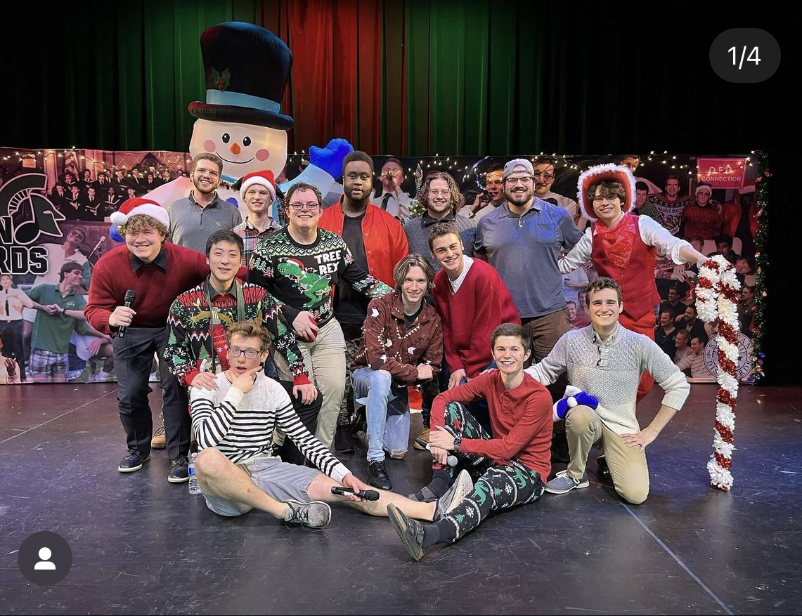

The Spartan Dischords
Published on October 13, 2024 by Evan McDonnell
In 2023, I joined MSU's oldest acapella group: The Spartan Dischords! This experience has been a blast and I've enjoyed every moment of it. When I first started as a newbie in the group, I had to move the piano out during every rehearsal, along with the other newbies in the group. Now, I've been elected as the music director and I run our rehearsals. There are four vocal parts in the Spartan Dischords. Tenor 1, Tenor 2, Baritone, and Bass. I started out as a Baritone, but I sing bass now because we need extra support on low parts. One of my favorite things about this group at MSU is the blend of harmony and humor. We're allowed to make jokes while we're performing on stage, and our goal is to entertain and make people laugh just as much as it is impress people with our vocal talent. We have three shows every year: A christmas concert, a valentines day concert, and our big show at the end of the school year. Each of these concerts has a set of tradition songs as well as new songs that we pick for every concert. For our big show, we perform a 12 minute long medley where we all dress up and each person in the group gets their own solo! Our christmas concert is coming up soon, on December 6th. We've already began working on music for it and we are picking our songs for the show this tuesday! This group has been one of my core experiences at Michigan State and I'll be sad to leave it behind when I graduate next semester..